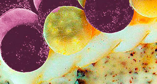

Lomo de salmonete, apionabo y remolacha sobre cremoso de patatas y mascarpone. Notas de maracuyá.
"Mediterráneo y combinación de productos utilizados para la cocina dulce, la tenue frontera entre el mundo dulce y salado"

| Salmonete/Tubérculos | |
|---|---|
| Salmonetes | 4 un. |
| Apionabo | 500 gr. |
| Remolacha | 300 gr. |
| Agua de mar | 1 l. |
| Aceite de limón | 40 ml. |
| Clara de huevo | 1 un. |
| Cremoso de Patatas | |
| Patatas Monalisa, buffet... | 600 gr. |
| Ajos | 4 dt. |
| Mascarpone | 60 gr. |
| AOVE | 60 ml. |
| Vainilla Bourbon | 1 un. |
| Sal marina | 1 cc. |
| Coulis Maracuyá | |
| Zumo de Maracuyá | 100 ml. |
| Sacarina líquida | 3 gt. |
| Xantana | 0,6 gr. |
-
Salmonete/Tubérculos
- Pelar y lavar la remolacha y el apionabo. Cortarlo en láminas de 1 mm. Con un cortapastas cortar discos de 1,5 cm de ø aproximadamente.
- Poner agua mineral con un puñado de sal a hervir. Escaldar unos segundos por separado empezando por el apionabo.
- Enfriar en agua con hielo, escurrir. Secar y reservar.
- Limpiar los Salmonetes, separar los dos lomos eliminando espinas e impurezas. Sumergirlos 10' en el agua de mar.
- Retirar del agua, secarlos con un paño o papel absorbente. Pintarlos con la clara de huevo solo por la parte interior.
- Colocar alternativamente los discos de verdura encabalgándolos. Pintar con el aceite. Cremoso de Patatas
- Pelar, lavar y cortar las patatas. Pelar los ajos. Poner a cocer las patatas y los ajos cubiertos de agua pero sin sal. Cocer 20'.
- Sacar las semillas de la vaina de vainilla.
- Escurrir las patatas y los ajos reservando el agua de cocción. Triturar en thermomix velocidad 5, 5', 60º.
- Bajar la velocidad a 2. Añadir las semillas de vainilla, e ir incorporando el AOVE como si de una mahonesa se tratara.
- Verificar la textura, si lo queremos algo más ligero echar un poco del agua de cocción.
- Rectificar de sal y reservar al calor. Coulis Maracuyá
- Mezclar todos los ingredientes y triturar con el túrmix.
- Pasar por el colador y dejar reposar en la nevera un mínimo de 12 h. para que pierda el aire. Acabado/Presentación
- Encender a potencia media el grill del horno.
- Pintar una sartén antiadherente con un poco de aceite oliva. Calentar y poner los filetes de Salmonetes por la parte de la piel.
- Marcarlos durante 2'. Retirar y colocarlos sobre una bandeja para horno engrasada previamente.
- Introducir en el grill y dorar la superficie 1'. Retirar y pulverizar para abrillantar.
- En un plato colocar en el fondo el cremoso de patatas, disponer encima el Salmonetes y finalizar con el coulis de Maracuyá.
- Servir inmediatamente.